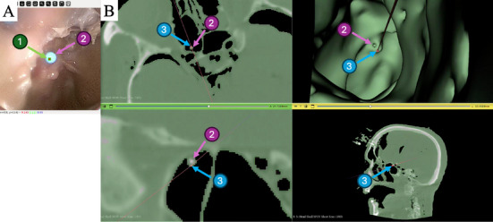

CT registration with PnP & continuous scaling
Monocular SLAM reconstructs the scene and camera path at an unknown scale, in a coordinate system separate from the patient's CT. Navigation requires both the camera pose and reconstructed surface to be aligned with the CT anatomy. Direct surface registration is difficult because the reconstruction is partial and its scale is unknown.
My contribution
I built a CT rendering module to set an initial camera estimate, then displayed the endoscopic frame beside a CT rendering using the same camera calibration. I developed the correspondence-selection module to associate image points with 3D CT locations, and used RANSAC-based PnP to estimate pose while rejecting inconsistent correspondences.
Scale estimation & visualization
I built a continuous scaling pipeline that compares reconstructed 3D points associated with tracked image points against locations obtained by ray tracing into the CT mesh. This brings the reconstruction into CT scale. I integrated the registered camera pose into 3D Slicer using existing visualization modules.
Next challenge
Manual correspondence selection must be repeated after the endoscope is removed and navigation restarts. This motivated the automatic re-registration project below.

Study results and figures: Soberanis-Mukul, Chan et al., Healthcare Technology Letters (2025), Figs. 1, 3 & 5. © The Authors. Co-first author. Cadaveric proof of concept.
Read paper